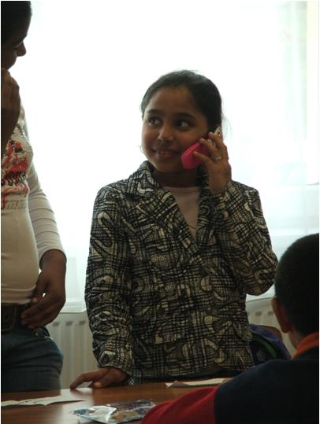
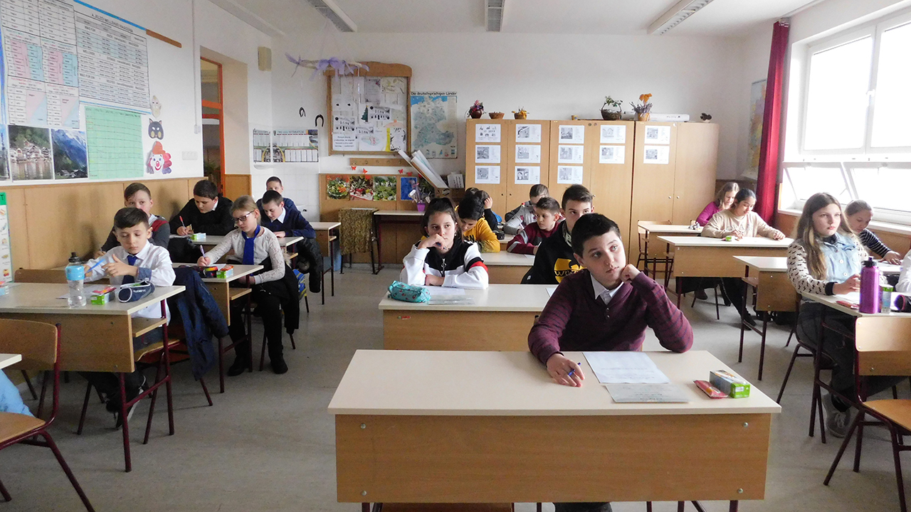
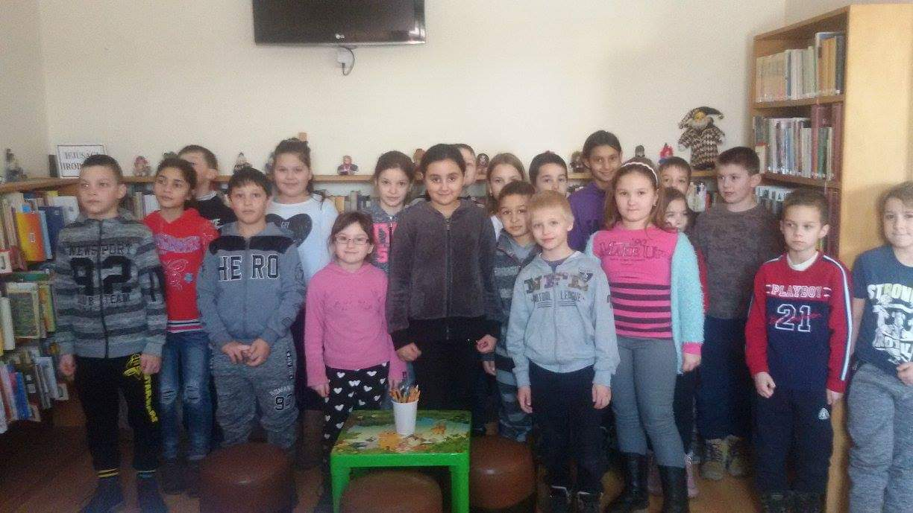

Ezek Mátészalka iskolái:
1.Petőfi Sándor Általános Iskola: Az iskola épülete egykor egy tanyaépület volt, amit később átépítettek iskolává.
2.Varga Katalin Gimnázium: Az iskola épülete korábban egy zsinagóga volt, melyet az 1950-es években alakítottak át iskolává.
3.Bessenyei György Gimnázium: Az iskola nevét a híres magyar íróról, Bessenyei Györgyről kapta, aki Mátészalkán született.
4.Móra Ferenc Általános Iskola: Az iskola nevét a híres magyar íróról, Móra Ferencről kapta, aki az iskola alapító tanára volt.
5.Herman Ottó Általános Iskola: Az iskola nevét Herman Ottó híres magyar természettudósról kapta, aki a XIX. században élt és dolgozott.
6.Dózsa György Általános Iskola: Az iskola nevét Dózsa György híres magyar nemesről kapta, aki a XVI. században élt és harcolt.
7.Kossuth Lajos Általános Iskola: Az iskola nevét Kossuth Lajosról, a magyar szabadságharc egyik legfontosabb vezetőjéről kapta.
8.Tóth Árpád Gimnázium: Az iskola nevét Tóth Árpád híres magyar költőről kapta, aki az 1900-as évek elején élt és alkotott.
9.Trefort Ágoston Általános Iskola: Az iskola nevét Trefort Ágostonról kapta, aki a XIX. században élt és dolgozott, és a magyar közoktatás egyik legfontosabb
reformjának az egyik kidolgozója volt.
10.Széchenyi István Általános Iskola: Az iskola nevét Széchenyi Istvánról, a híres magyar politikusról, íróról és reformeről kapta, aki az 1800-as években élt
és dolgozott.
  